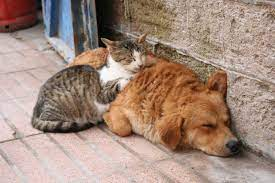

Alimentación Balanceada:
Abandono animal
Una de sus causas es la falta de responsabilidad de los duelos y eso origina que los animales esten expuestos diariamente a peligros.

.jpeg)
Una de sus causas es la falta de responsabilidad de los duelos y eso origina que los animales esten expuestos diariamente a peligros.
Cuidado Responsable de Mascotas: Consejos para Garantizar una Vida Plena
Alimentación Balanceada:
Proporciona a tu nuevo compañero peludo una dieta equilibrada y adaptada a sus necesidades nutricionales.
Atención Veterinaria Regular:
Programa visitas periódicas al veterinario para chequeos de rutina y vacunaciones.
Ejercicio Diario:
Asegúrate de que tu mascota realice suficiente ejercicio diario.
Ambiente Seguro:
Crea un entorno seguro en tu hogar. Elimina posibles peligros
No maltratar:
El abandono de tu mascota tambien es un acto de maltrato.
.png)
Adoptame, somos un equipo que está formado por voluntarios apasionados que aman a los animales y están comprometidos con su bienestar. Trabajamos en estrecha colaboracion con las fundaciones del municipio para identificar a los animales que necesitan ayuda y encontrar hogares adecuados para ellos.